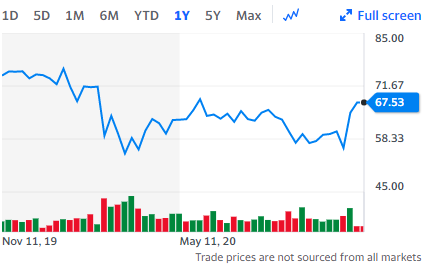
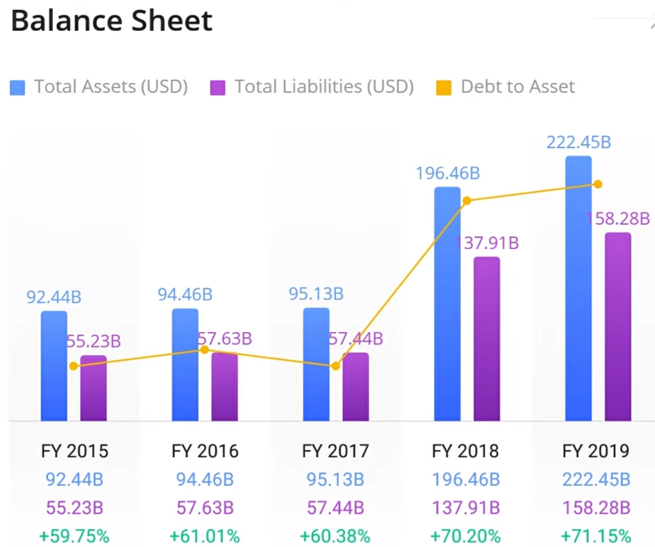
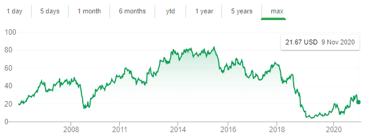
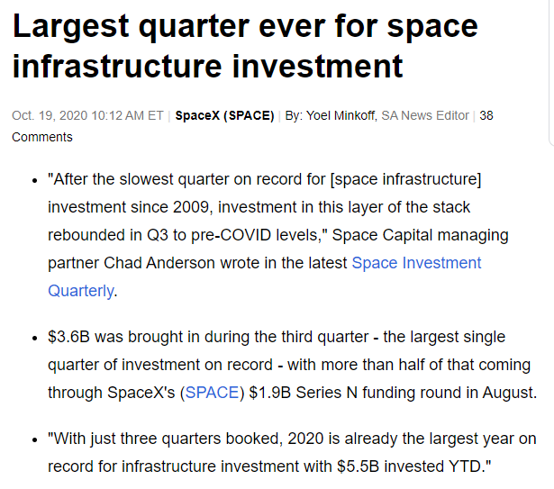

Biden win, what's in for the market?
I am sure everyone followed closely on US elections and know all the political news.
Biden would be inheriting an economy in a real mess and struggling to find footing in the midst of the second wave of coronavirus infections. Adding the uncertainty of a new administration into an already wildly uncertain environment could be a recipe for some choppiness.
Now that the campaign is over, it is time for him to start making good on the policy changes he promised. His presidency is bound to affect dozens of U.S industries. So I am sure most (retail) investor like myself would be thinking, should I rebalance my portfolio and where should I extend my allocation? So, let's start off with an overview of which asset class may be affected.
Bonds
With Biden winning, less ambitious fiscal policy is expected. In that scenario, bonds will continue to rally as debtholders have less to fear from the higher inflation expectations that would follow from a faster economic recovery and increased debt issuance.
Commodities
One of the sector that is getting hit the hardest. Win by Biden could lead to more restrictions in the energy market, including shale production. Biden has said he plans to ban new oil and natural-gas drilling permits on federal lands.
The Biden campaign’s climate plan calls for the U.S. to have net-zero greenhouse gas emissions by 2050. And he repeated his pledge to end federal subsidies for the oil and gas industry. In his own words: "I would transition away from the oil industry, yes".
Tackling climate change means sharply cutting oil, gas and coal emissions, and that means eliminating most burning of fossil fuels. Biden talks of a 30-year transition to a carbon-free economy, by encouraging more wind and solar power and more energy efficiency.
Tech
The one that has been carrying the market so far, would they continue to prosper? So far, Biden has remained relatively quiet on tech. Harris, who hails from California, will likely be seen by the industry as more a friend than a foe because of her ties to Silicon Valley. But it's hard to imagine Big Tech would enjoy the same kind of cozy relationship it had during the Obama administration. There is too much debate on this and I will just summarize up some of the key points that may make or break this sector.
The biggest issue facing tech companies under President Biden will be reformed to antitrust law meant to rein in the biggest tech companies. A scathing 449-page congressional report detailing abuses of market power by Google, Apple, Amazon and Facebook likely foreshadow troubles ahead for tech firms under a Biden administration. The report put together by a panel from the House Judiciary Committee laid out a road map for Congress to put the brakes on the dominance of the nation's four largest tech companies.
A big part of Biden rural economic development strategy is investing $20 billion in getting broadband access to communities that don't have it. He's also called for partnering with municipal utilities to bring fiber broadband connections to communities across rural America.
The old but gold. This law essentially protects big tech giants from lawsuits over the content of their user post on their platform. Biden mentions that these companies are getting off too easy when bad actors use their platforms to disseminate disinformation, hate speech etc. And he will be looking to remove it.
Still, it's clear that the US government has put big tech under more intense scrutiny as attitudes toward Silicon Valley companies have changed dramatically.
Restaurants & Retailers
Biden's goal to raise the minimum wage to $15/hr from $7.25, right now, could reduce profit and may lead to some job being cut. Labor has already accounted for about 31% in restaurant cost during 2019. Further increasing this could dip restaurant profit to the negative zone especially with COVID-19 pandemic still on going. Restaurateurs could be helped if Biden brings new funding, loans or paycheck protections. But any further Covid-19-related shutdowns or dining restrictions, which Biden has hinted at, could hurt.
Retailers, particularly those deemed nonessential such as department stores, could be at higher risk of more Covid-19-related closings under Biden. They also may have to contend with higher expenses, especially if Biden gets the federal minimum wage lifted to $15. That said, Biden also will renew stimulus talks with urgency, increasing the likelihood that American wallets and small businesses get a boost.
So, the big question now. Where should we invest?
Cannabis
Biden’s win may hasten federal legalization, helping cannabis companies get more access to capital from banks and letting marijuana businesses accept credit cards and have checking accounts.
Casinos
Biden does not support the Justice Department's decision last year to reassert provisions of the 1961 Wire Act - a move that threatened online gambling. It is undoubtedly that even before pandemic, E-commerce, online betting, basically everything online is growing at a higher rate compared to any other industries. Biden’s harder line on coronavirus restrictions could close casinos again if the pandemic worsens, but his close ties to casino-worker unions could see future stimulus funds directed toward them.
Healthcare
The one thing that he always spoke of. Affordable healthcare for everyone. Biden is looking to bolster and expand the insurance coverage and subsidies this industry heavily. He is looking to create a public health-insurance option like Medicare that could compete with private insurers.
Medical technology is one of the area that we should particularly focus on. Yes, I know we have came a long long way but COVID-19 has shown the world how vulnerable we are. Biden plans to double down on testing to help control the coronavirus outbreak, bolstering drive-through sites, investing in next-generation technology and creating a board to shepherd the production and distribution of tens of millions of tests nationwide. He also pledged to return production of medical-technology goods to the U.S. and stockpile essential components to reduce dependence on other countries in a crisis.
Renewable Energy
This is a no-brainer play, even without Biden in the equation. Renewable energy has became a huge topic all around the globe. We all know Global warming is real and resources are being dried up.
The American renewable energy sector has cheered the declared election of Joe Biden as the next President of the United States, with industry bodies placing the accent on the potential for the country to rejoin global climate leadership under the new administration. The President-elect and his team have laid out an ambitious, comprehensive approach to energy policy that recognizes renewable energy’s ability to grow America’s economy and create a cleaner environment, while keeping electricity costs low and combating the threat of climate change.
That plan includes a pledge to take executive action such as rejoining the Paris climate agreement, reversing Trump administration actions that weaken automotive and appliance efficiency standards, and directing federal agencies to buy clean power. The Solar Energy Industries Association (SEIA) has outlined a 100-day plan that includes a number of executive actions, such as increased renewable energy development on public lands and solar adoption by federal agencies and buildings.
Emerging Markets
Equities in developing markets, and especially in Asia, may thrive if Biden’s presidency leads to a more stable foreign and international trade policy.
Gains for emerging markets would support the view that the election result is likely to cap U.S. interest rates for longer and weaken the dollar, lifting the debt and currencies of developing nations as they struggle to finance efforts to contain the worst of the Covid-19 pandemic.
Asia’s markets will likely outperform emerging peers as the region’s control of the coronavirus pandemic helps economies recover faster than in other parts of the world where strict lockdowns are returning.
Pick and Shovel
A strategy that was born during the California Gold Rush, and a strategy that is difficult to execute. A pick-and-shovel play is an investment strategy that invests in the underlying technology needed to produce a good or service instead of in the final output. It is a way to invest in an industry without having to endure the risks of the market for the final product.
Personally, I have been tracking a few of them. Disclaimer alert, I am not advising anyone to get in, you need to do your own due diligence.
Pharmacy technicians will join their pharmacist colleagues in the effort to quickly immunize Americans against the Coronavirus once a vaccine against Covid-19 is approved by the U.S. government, perhaps by the end of the year. Drugstore chains including CVS Health, Walgreens Boots Alliance, Rite Aid and Walmart have been pushing the U.S. government and Trump White House to waive state scope of practice rules and allow pharmacy technicians the ability to vaccinate. A plan is being developed by the Centers for Disease Control & Prevention includes many of these major drugstore chains as future Covid-19 vaccination sites.
If we look at the 1 year chart, there is still a lot of room for this bad boy to move towards its 52 weeks high. With that being said, I believe it will continue to move pass it and trend upwards.
I believe, personally, that CVS is undervalued too. Looking at its ratios, CVS is currently trading at 10.84x P/E (fwd) while the 5-year average is trading at 15.72. EV/EBIDTA is trading at 8.51x and that 5-year ratio once again shows 9.38x, another ratio pointing that it is undervalued.

The balance sheet is also very healthy for this company and we do not have to worry for any bankruptcy anytime soon.
It is pretty evident from the picture that the assets far outweigh the liability.
So moving on to why I believe CVS will be a great investment. So far the company has conducted more than 6 million COVID tests - this represents about 70% of the testing that is done in a retail setting. And now, they have doubled the number of testing sites across the country to more than 4,000. That's not all. They have also become a partner with the government in administering COVID vaccines when available for long-term care facilities. They will eventually play a significant role in all vaccination administration. Having said that, this is good mid-long term investment for me.
This stock will probably not be on most of our list and we probably know nothing about it. But hear me out. Just to put it out there, this stock pick is a growth turn-around play. Complications with the management and a fail satellite send their stock crashing at mid-2017 and early 2018, but new management has since stepped in and it has grown over 400% till date.
Maxar not only their World View legion satellite and the acquisition of VRICON start to bring in impressive cashflow. But the space industry, in general, is taking off. First, we have Elon Musk successfully launching and landing of Falcon 9. We also have Sir Richard Branson, getting closer to his first commercial spaceflight, Virgin Galactic, let alone the number of celebrities who have already owned tickets to this extraordinary feat.
And news like this, with Q3 2020 being the largest single quarter of investment on record and 2020 already the largest year on record for infrastructure investment with Q4 to go. I believe that space industry has become investable and this news headline will become part of our life. This industry will probably be the next megatrend like AI and Maxar here right now is my first play.
However, significant risk management is recommended for this stock. Maxar's income from continuing operations was $0.00 in Q2. But the company did close the sale of its MDA space business in April, yielding a $304 million cash haul (after taxes), which worked out to a net profit of $4.94 per diluted share.
Maxar also engineered some significant debt restructuring, buying back some debts and rolling over some others; extended its loan due dates; and reduced its long-term debt load by more than $500 million, even as it trebled cash reserves to $177 million in cash and cash equivalents.
In their Q3 report, they have underperformed but with that being said, Maxar’s net income from continuing operations was $85 million compared to a net loss of $25 million in the same period of 2019. Maxar’s results of operations for the three months ended September 30, 2020, include the current estimated impact of COVID-19. The company had COVID-19 related EAC growth of $3 million within the Space Infrastructure segment, which negatively impacted its earnings during the three months ended September 30, 2020.
I can go on and on blabbering but to conclude this, I believe that there is a huge upside potential in this company.
Disclaimer: Any views or opinions represented in this article are personal and do not represent those of people, institutions or organizations that the owner may not be associated with in a professional or personal capacity unless explicitly stated.All content provided in this article is for informational purposes only. The owner will not be liable for any errors or omissions in this information nor for the availability of this information.